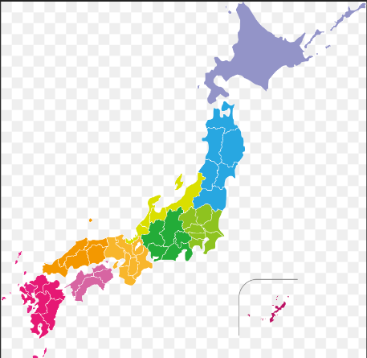

Tokyo / Osaka Travel Plan
7D6N Tokyo Osaka
把東京、河口湖、大阪與環球影城的移動順序整理成卡片，方便直接看每天要做什麼。
6/30 細項
交通

6/30
抵達日
00:10~04:25
桃園機場 - 羽田
~09:30
羽田 - 新宿
09:30~11:30
JR 新宿 to 河口湖
住宿：富士豪景酒店
7/2
移動日
11:00
退房
15:03~16:58
河口湖 - 新宿
16:58~17:40
JR 新宿 - 東京
~20:00
新幹線 東京 - 新大阪
入住：新大阪飯店
7/3
大阪
12:00
西九條會合
12:00~
先 Check in
Free Time
吃午餐、逛街
入住：環球影城港灣酒店
7/4
主題樂園
環球 All Day
7/5
返程前
11:00~~
JR to 臨空塔
放行李：OMO Kansai Airport by Hoshino Resorts